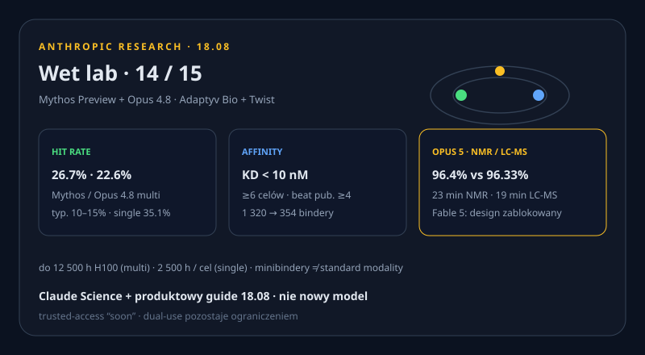

OpenAI pauzuje frontier RL. Astra może być Critical. Claude Code 2.1.235.
Nowe vs 18.08: oficjalna pauza RL + Astra may meet Critical (nie „jest Critical”), ChatGPT for Teens, Ads 31 EU (live next week), $5M oversight ≠ wczorajsze $1M+$1M, protein 14/15, Gmail send + Cowork paid, Code 2.1.235, Playground. X: 402 credits.

OpenAI zwalnia scaling: pauza RL i Astra may meet Critical
WAŻNE Po incydencie Hugging Face oraz wstępnych dowodach, że nadchodzący model Astra może spełnić próg Critical cyber w Preparedness Framework, OpenAI ogłasza dwutygodniową pauzę reinforcement learning na najnowszych modelach przeznaczonych do wdrożenia. Największy planowany frontier RL run pozostaje wstrzymany. Astra nie była modelem w exploicie HF.
FACT Pauza nastąpiła. OpenAI nie wyklucza, że Astra spełni próg Critical. NIE PISAĆ „Astra jest Critical” ani że Preparedness jest „rozwiązany”.


Produkty i modele
ChatGPT for Teens
NOWE Experience 13–17 / age-prediction U18. Study Mode, homework reminders, parental controls. Rollout ~2 tyg. Skuteczność age-gating = nieudowodniona.
ChatGPT Ads → 31 rynków UE
NOWE Live od pon. 24.08, nie dziś. W tym PL. Tylko Free/Go. Plus/Pro/Enterprise ad-free. Teens poza audience.
Claude Gmail: send / reply / forward
NOWE Default = approval za każdym razem. Team/Enterprise mogą odblokować auto-send. Paid. Press 18.08, brak newsroom timestamp. „Sends without approval” przekłamia default.
Cowork web/mobile na płatnych
NOWE Beta Pro/Max/Team; Enterprise gdy admin włączy. $20 Pro dostaje cloud Cowork. Nadal beta, nie GA.
Claude Code 2.1.235
NOWE 18.08 20:38 UTC. Spellcheck, LSP reconnect nie zabija cache, Shift+Tab ≠ session-wide edit. 2.1.234 zostaje ostatnim feature dropem — nie recyklinguj.
Console Workbench → Playground
NOWE 18.08. Zapisane prompt/eval ze starego WB nie przechodzą. Experimental prompt-tools API wyłączone 17.08.
Laby i research
Claude projektuje bindery — wet lab 14/15
NOWE Mythos Preview + Opus 4.8; Adaptyv + Twist. Bindery 14/15. Multi-target 26,7% / 22,6% vs typ. 10–15%. Dual-use: design zablokowany na Fable 5.
Claude Science + Tag on-call
NOWE Science guide (beta): daemon u klienta. Tag: first SITREP, mediana 14 min. Nie nowy model / SKU.
Biznes
$5M oversight ≠ wczorajsze $1M+$1M
NOWE $5 mln dla demokratycznych ciał nadzoru. Osobna linia od 17.08 ($1M+$1M, 14 projektów). Recipients TBD.
WSJ Q2 + Spirit $10M
REPORTED OpenAI Q2 $6,7B / strata $12,3B; Anthropic $11,6B — second-hand, nienazwane źródła. NOWE Google $10M za dane Spirit; hearing 19.08 17:00 CEST — pending order.
Cerebras CS-4 + Bedrock Grok 4.6
NOWE CS-4: 3× WSE-3 Turbo, claim vendora. SKU Bedrock dodał Grok 4.6 — nie recyklinguj launchu 12.08.
Firefox Smart Window + Linear + Copilot
NOWE Mozilla Smart Window (opt-in, Exa). Linear: agenty ~połowa issue. Ars Copilot ?autorun=1 — bez kroków reprodukcji.
Open-source / narzędzia / gadżety
HF MultiVectorEncoder + Blue Skies
NOWE Sentence Transformers v6 late-interaction. Google £1,4M trial contrails Shanwick — climate-ops, nie Gemini.
HOVERAir VERSA + PH Taku
NOWE CROWDFUNDING VERSA Indiegogo 18.08, FCC USA, nie shipping. upvote0: Taku #1, Whisperstream local dictation. Peeko/Lumi/CtrlVibe: brak novum.
Sygnały X + Reddit + HN
X HOLE Konektor user-X połączony (ProductRootIO). search_news/timelines: 402 credits depleted. search_posts_all nigdy nie użyte. Bez scrapu Chrome. Dziura X ≠ brak newsów.
REDDIT HOLE r/LocalLLaMA, r/ClaudeAI, r/OpenAI: 403. Nie wymyślamy wątków.
HN: Spirit 575 · CS-4 237 · machine0 73. X z HN: HP driver. PORTS-Pike i ARR $65B: brak nowych oficjalnych liczb.
Co warto dziś sprawdzić
3 tweets ready to post
https://openai.com/index/pacing-model-development-cyber-capabilities/
https://www.anthropic.com/research/Claude-accelerates-protein-design
https://github.com/anthropics/claude-code/releases/tag/v2.1.235